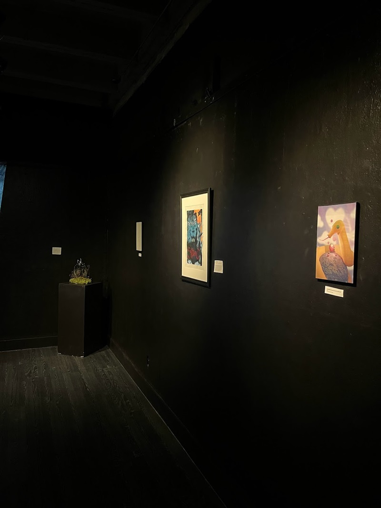
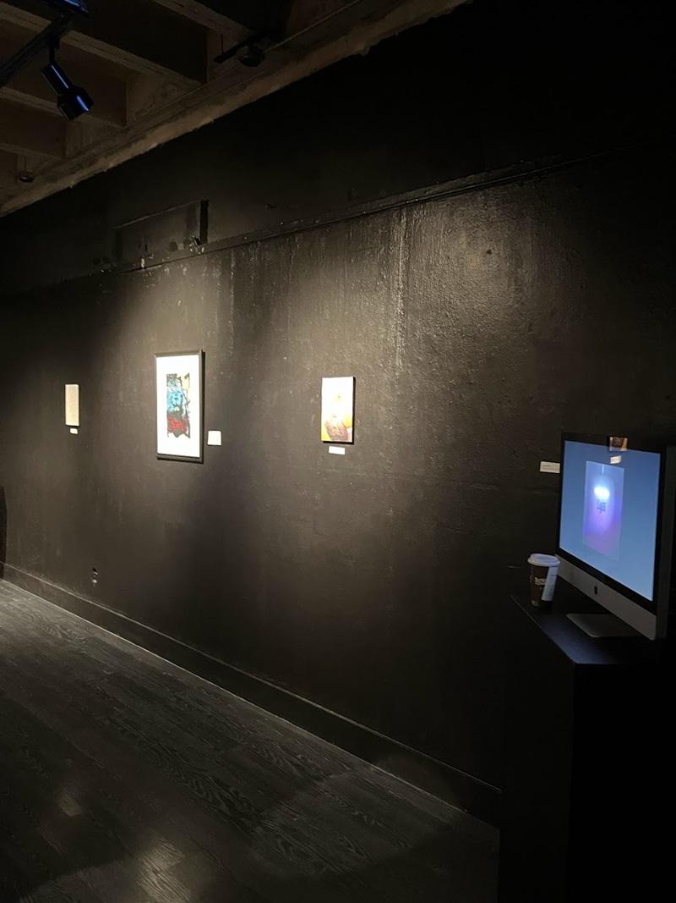

CA, USA | Interdisciplinary Artist
-Exhibitions: "Light in the Dark"-
SJSU Black Gallery, San Jose, CA, February 2023.

Exhibition text.
"An Uplifiting Gift", 2022, found object (wine bottle and dried flower bouquets).
"overlooked vibrance", 2021, digital projection, 3 minutes 45 seconds, continuous loop.
"overlooked vibrance" Artist Statement
The fast pace of current society has desensitized us from the world around us, making our existence seem bleak and colorless. Although, it all lies within our adopted perspective and mindset. If we take a step back, we are able to realize that life is more vibrant and has more meaning than what society lets on. Taking the time to realize the beauty in front of us that we usually overlook changes how we take in the world, and adds more depth to the life we live and experience. Beauty is in the eye of the beholder and the world in which we are embraced by lies within our own hands. I would have liked to display this piece in a gallery installation, with it being projected (on loop) in a dark room with other works on the walls and floor that connect to the topic of the beauty that lies in mundane objects/tasks versus the quick pace of society.
The fast pace of current society has desensitized us from the world around us, making our existence seem bleak and colorless. Although, it all lies within our adopted perspective and mindset. If we take a step back, we are able to realize that life is more vibrant and has more meaning than what society lets on. Taking the time to realize the beauty in front of us that we usually overlook changes how we take in the world, and adds more depth to the life we live and experience. Beauty is in the eye of the beholder and the world in which we are embraced by lies within our own hands. I would have liked to display this piece in a gallery installation, with it being projected (on loop) in a dark room with other works on the walls and floor that connect to the topic of the beauty that lies in mundane objects/tasks versus the quick pace of society.


"Surrender", 2022, mixed media (acrylic, beads, moss, and wire on plaster).
"Surrender" Artist Statement
Within the past few years, I’ve experienced a lot of ups and downs. At times, it felt like I was stuck at my lowest points and that I wouldn’t be able to come back from it. I suppressed my emotions and bottled things in until I broke. The lows, sadness, and frustration are an inescapable part of life. There will always be a time when the universe throws you a curveball or it feels as if your whole life, being, and existence are crumbling around you. These brutal and heart wrenching moments are not easy, and never will be, but they are something you have to accept and deal with. Sometimes you need to take a moment to surrender to what life gives or takes from you. When you allow your emotions and experiences to consume you, acceptance and calm follows. With “Surrender”, I want to express hope and growth that can stem from hardships and dark places.
The two hands emerging from the moss covered floor are held up in a surrendering motion, reaching upwards for what is to come in the future. Poppies surround and grow from the ground around the hands. They are the state flower of California, which is where I was born and raised, and are a symbol of hope and resilience. The czech seed bead butterfly is the centerpiece and another symbol of transformation, infinite potential, and the ability to experience the wonder of life. The dark color palette of the piece is juxtaposed by the idea of hope and resilience, that even in the dark, there is room for brilliance and growth.
Within the past few years, I’ve experienced a lot of ups and downs. At times, it felt like I was stuck at my lowest points and that I wouldn’t be able to come back from it. I suppressed my emotions and bottled things in until I broke. The lows, sadness, and frustration are an inescapable part of life. There will always be a time when the universe throws you a curveball or it feels as if your whole life, being, and existence are crumbling around you. These brutal and heart wrenching moments are not easy, and never will be, but they are something you have to accept and deal with. Sometimes you need to take a moment to surrender to what life gives or takes from you. When you allow your emotions and experiences to consume you, acceptance and calm follows. With “Surrender”, I want to express hope and growth that can stem from hardships and dark places.
The two hands emerging from the moss covered floor are held up in a surrendering motion, reaching upwards for what is to come in the future. Poppies surround and grow from the ground around the hands. They are the state flower of California, which is where I was born and raised, and are a symbol of hope and resilience. The czech seed bead butterfly is the centerpiece and another symbol of transformation, infinite potential, and the ability to experience the wonder of life. The dark color palette of the piece is juxtaposed by the idea of hope and resilience, that even in the dark, there is room for brilliance and growth.
"Friends_:”) (a strawberry frog and banana snake)", diptrych 1/2, 2022, lazer cut paper.
"Friends_:”) (a strawberry frog and banana snake)", diptrych 2/2, 2022, digital print of 3d render.

"Light in the Dark", 2023, 3d animation displayed on monitor, on loop.
"Beyond the Depths", 2020, mixed media (acrylic, embrordery, and screen printing on fabric).
"Beyond the Depths" Artist Statement
The hardships that we face throughout life have a purpose. The stability and durability an individual builds for themselves that leads to happiness and joyous experiences in life comes from a untold journey they’veundergone. An individual reaches out, looking skyward from the depths of the ocean, surrounded by darkness and cruel words that haunt the depths of her mind. But the closer you get to the surface, the more light there is. Given time, we are able to leave the lonely and dark depths. The ugly parts in life are unavoidable. By exiting them, we are able to strengthen ourselves and become happier.
The hardships that we face throughout life have a purpose. The stability and durability an individual builds for themselves that leads to happiness and joyous experiences in life comes from a untold journey they’veundergone. An individual reaches out, looking skyward from the depths of the ocean, surrounded by darkness and cruel words that haunt the depths of her mind. But the closer you get to the surface, the more light there is. Given time, we are able to leave the lonely and dark depths. The ugly parts in life are unavoidable. By exiting them, we are able to strengthen ourselves and become happier.